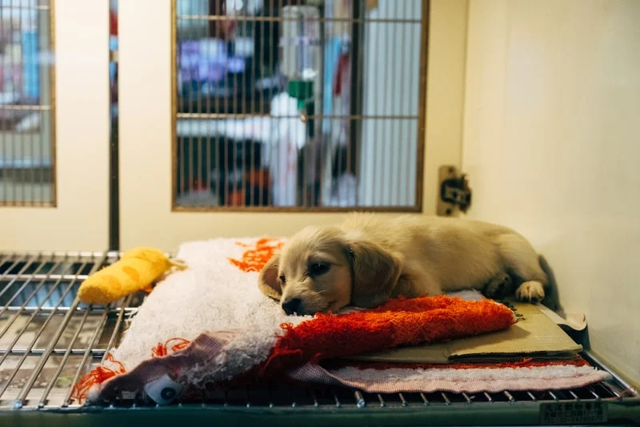
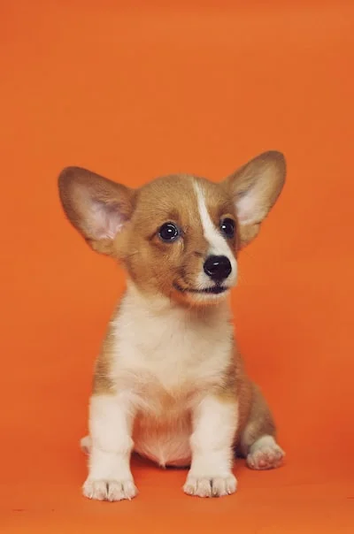
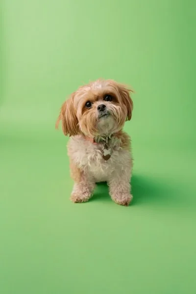
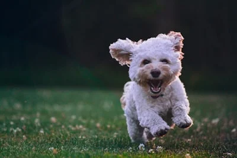

Luna
En adopción · Refugio Patitas Felices
| Especie | Perro |
| Raza | Mestiza |
| Edad | 2 años |
| Tamaño | Mediano |
| Sexo | Hembra |
| Peso | 12 kg |
Salud
Vacunada ✓
Castrada ✓
Desparasitada ✓
Comportamiento
Sociable
Apto niños
Tranquila
Luna llegó al refugio hace 8 meses después de ser encontrada en la calle. A pesar de su pasado difícil, es una perra muy cariñosa y sociable. Le encanta jugar con pelotas, correr en espacios abiertos y es excelente con niños. Se lleva bien con otros perros y aprende rápido.
Proceso de adopción
-
Completá la solicitud Llenás el formulario online con tus datos
-
Revisión del refugio El equipo de Patitas Felices evalúa tu solicitud en 48 hs
-
Visita o videollamada Coordinamos un encuentro para que conozcan a Luna
-
Luna va a casa Firmás el acuerdo de adopción responsable
¿Luna es la indicada para vos?
Quiero adoptarla